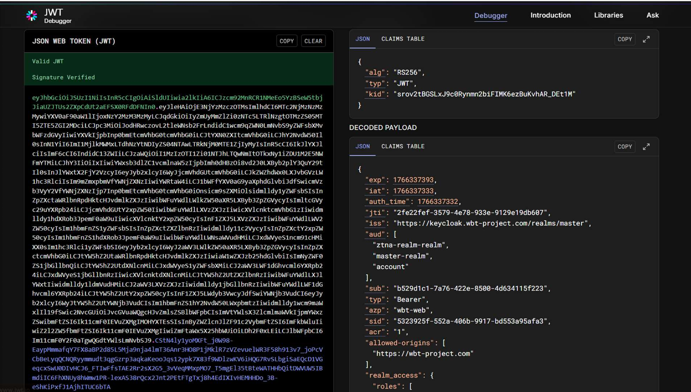

Hello, I'm Yiğit. As a third-year software engineering student, I focus on cybersecurity, modern network architectures and artificial intelligence applications. My work includes Zero Trust security architectures, authentication systems and interactive AI based applications.
I am a third-year Software Engineering student focusing on secure system architectures, modern networking technologies and software development. My research interests include Zero Trust Network Access (ZTNA), authentication and authorization systems and Intent-Based Networking (IBN).
I develop backend architectures, API based systems and data-driven software solutions. Alongside system design, I also work on artificial intelligence integration and interactive systems to build modern and intelligent software applications.
Python, Java, C, C++, SQL
ZTNA, Authentication, Authorization, RBAC
Keycloak, JWT, SSO
AI Integration, NLP, Data Analysis
Git, Docker, REST API
Technical Reporting, Problem Solving, Project Management

Zero Trust Network Access architecture using Keycloak and JWT.
DetailsSecure architectures, access control and modern protection models.
Identity-focused secure access design for modern systems and services.
Smarter network management approaches based on policy and automation.
Artificial intelligence integration for interactive and intelligent software.
User-centered interaction models for engaging and responsive experiences.
Authentication, authorization and reliable backend communication design.
Email: ugurkan.yigit.27@gmail.com